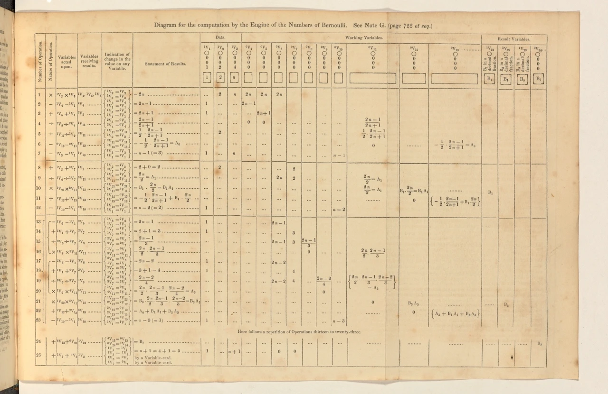
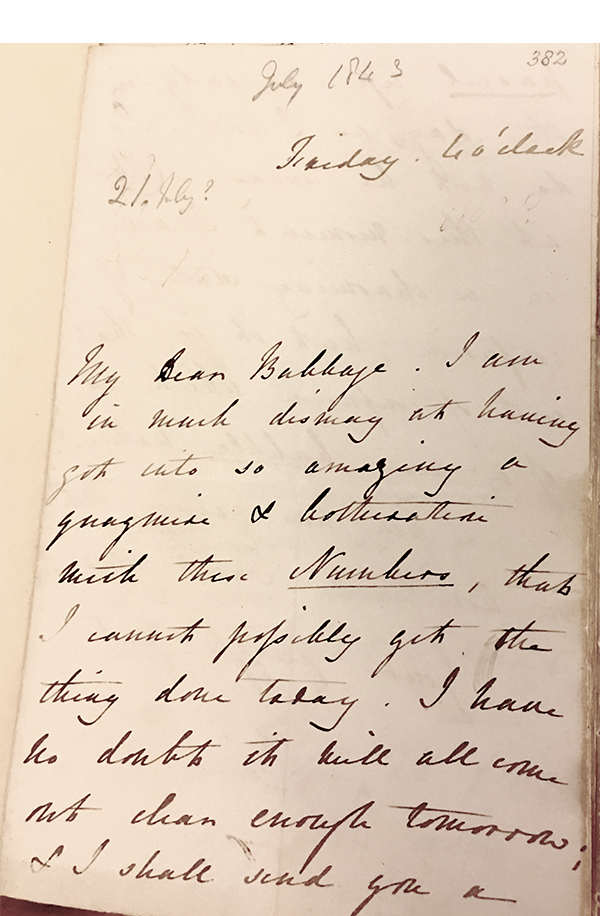
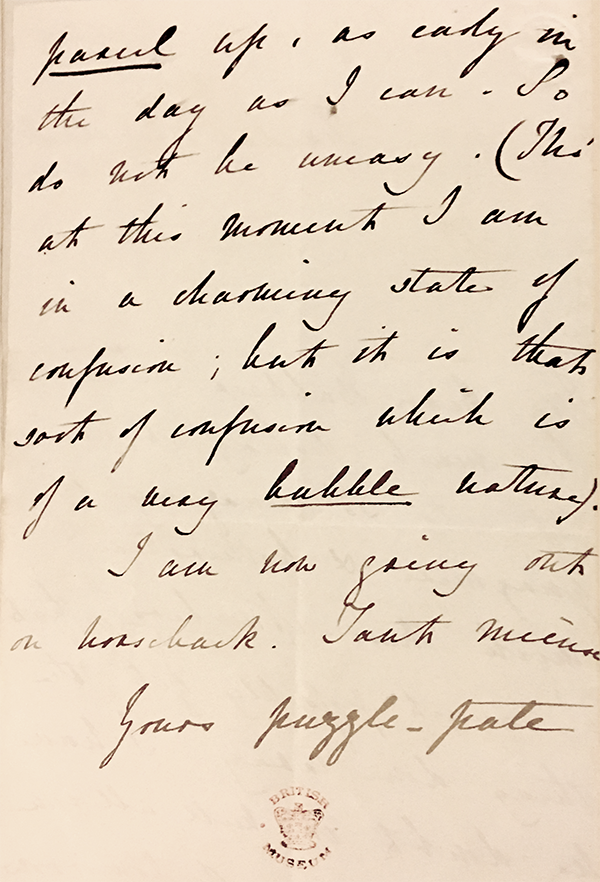

"That brain of mine is something more than merely mortal, as time will show"
Ada Lovelace was the daughter of poet Lord George Gordon Byron and Lady Anne Isabella Milbanke.
Her parents separated only a few weeks after Lovelace was born, and Lovelace never saw
her father again. What did her mother do about that? She sh*t talked him so much that Lovelace
became infamous in Victorian society.
While it was not standard for women to have an education in science and math (classic 1800s sexism),
Lovelace's mother insisted on having tutors for Lovelace in these subjects, including Mary Somerville
and Augustus De Morgan. She wasn't close with her mother, however, and was raised by her maternal grandmother.
Throughout her life, Lovelace was often ill. In 1829, she was paralyzed after getting the measles and was only
able to walk on crutches three years later in 1832. The end of her life was actually quite tragic. She died at
the age of 36 from uterine cancer in an especially painful way, since her mother took away her opium (which is
what was easing her pain, not to mention it's the 1800's and everyone had an opium addiction). On her deathbed,
her husband abandoned her after she confessed something to him, but no one knows what she said.
1. Academic Relationships
"The more I study, the more insatiable do I feel my genius for it to be."
At a party in 1833, her tutor, Mary Somerville, introduced Lovelace to Charles Babbage, who was 41 at the time.
Babbage's ideas on automating computations were considered outrageous by many people. A few weeks later,
he showed her his partly completed Difference Engine.
The Difference Engine was designed to automate mechanical calculations, such as addition and subtraction,
however its capabilities were very limited. It was a precursor to Babbage's Analytical Engine, which we
will go over in depth below. As their friendship developed, they formed an intellectual partnership,
especially in relation to Babbage's Analytical Engine.
2. The Analytical Engine
"Imagination is the discovering faculty, pre-eminently. It is that which penetrates into the unseen worlds around us, the worlds of science."
Top View of the Analytical Engine design
The Analytical Engine, designed by Babbage, was the first designed automatic general-purpose computing machine.
It's similar to modern computers in the way that it consists of a "store," a "mill," and a punched-card reader
(the three parts correspond to the memory, CPU (central processing unit), and an input device that modern computers have).
While the engine was never actually built (Babbage couldn't get enough funding), it was an opportunity for Ada Lovelace's
intellect to shine. The timeline of events went something like this:
=> Babbage presented his Analytical Engine in Italy in 1840
=> Mathematician Luigi Federico Menabrea said "woahh," took a
bunch of notes, and published "sketch of the Analytical Engine"
in French. He focused on the mathematical rather than the
mechanical.
=> Lovelace began translating the work, adding her own notes.
3. Sketch of the Analytical Engine with Notes by Ada Lovelace
So what exactly were in her notes? For starters, she detailed a program that used the
Analytical Engine to compute a series of Bernoulli numbers. Many call Lovelace the first
programmer, but a more accurate label would be the-writer-of-the-first-recognized-algorithm
(yeah, that's a mouthful). Her algorithm consisted of two loops and demonstrated the Engine's
conditional branching capability.
Lovelace's notes also detailed the process behind her algorithm:
=> Bernoulli numbers fetched from the "store"
=> Calculations performed in the "mill"
=> Then moved back based on holes in the card reader
Below is a table of the computation for the algorithm from her notes:

Table of computations for calculating Bernoulli Numbers in Lovelace's algorithm
More impressive than publishing the first computer program, however, was recognizing that since the machine
can manipulate numbers, it can also manipulate symbols. Thus, Lovelace realized that the machine could
calculate things that the human brain hasn't worked out yet!
Most of what we know is from Lovelace's notes and her correspondence with Babbage. In a letter to Babbage, she wrote,
"I want to put in something about Bernoulli's numbers, in one of my Notes, as an example of how an implicit function
may be worked out by the engine, without having been worked out by human head and hands first. Give me the necessary data and formulae."
Below, you can see photographs of one of these letters, writing:
"My Dear Babbage. I am in much dismay at having got into so amazing a quagmire & botheration with these Numbers, that I cannot possibly
get the thing done today. ... I am now going out on horseback. Tant mieux."


And in another, she wrote:
"I have worked incessantly, & most successfully, all day. You will admire the Table & Diagram extremely.
They have been made out with extreme care, & all the indices most minutely & scrupulously attended to."
Babbage had written smaller programs for the engine, however none were really published and did not come close to the complexity of Lovelace's.
In response to Lovelace's work, Babbage wrote,
"I am very reluctant to return your admirable & philosophic Note A. Pray do not alter it. . . . All this was impossible for you to know by
intuition and the more I read your notes the more surprised I am at them and regret not having earlier explored so rich a vein of the noblest metal."
4. How We Remember Her
Ada Lovelace Day is held annually in the UK on the second Tuesday of October (an arbitrary date chosen in order to not disturb any other holidays, exam seasons etc. ...)
The holiday celebrates all women in STEM careers and often features talks given by women researchers.
Lovelace also had a computer language, Ada, named after her in the 1980s. The program was used for large scale military and aerospace applications, and is now used for
mission-critical defense software (weapon systems, communications, intelligence systems) in the Department of Defense.
And that's a wrap! There is still SO much about her to read online, and we've linked all our sources below if you'd like to check them out! While Ada Lovelace is
one of the more well known #WomeninSTEM, we hope you learned something new with us today :).